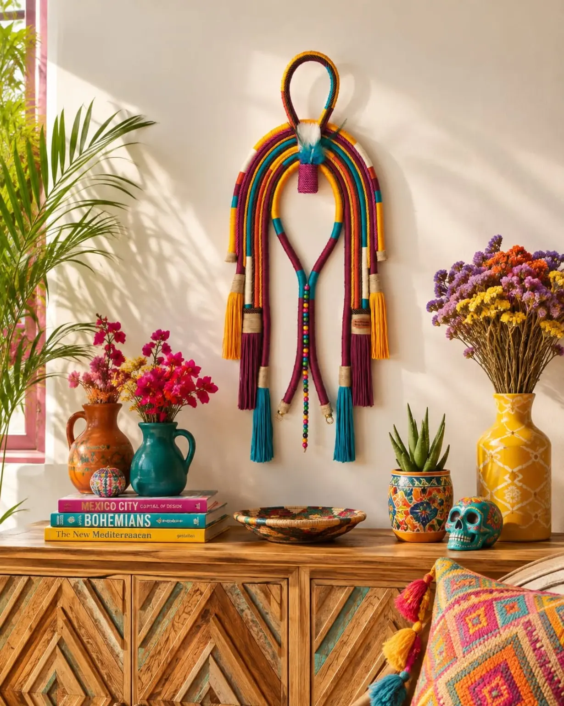
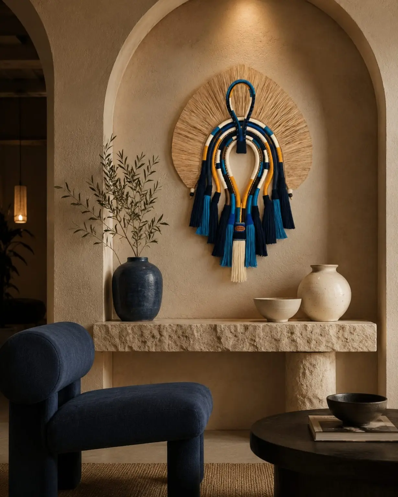
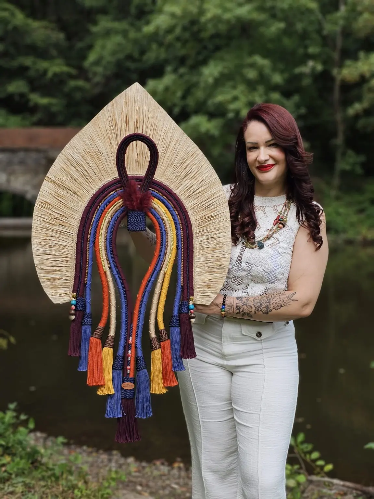
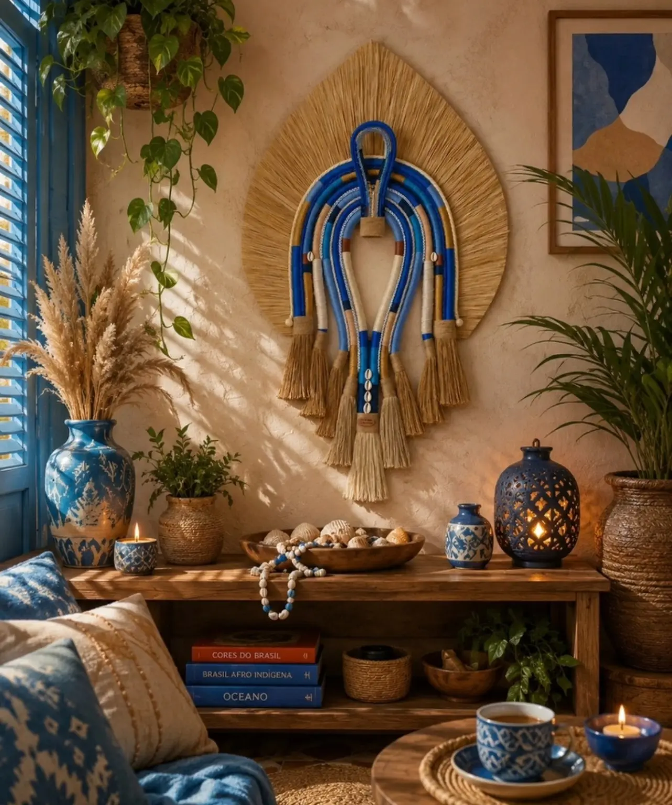
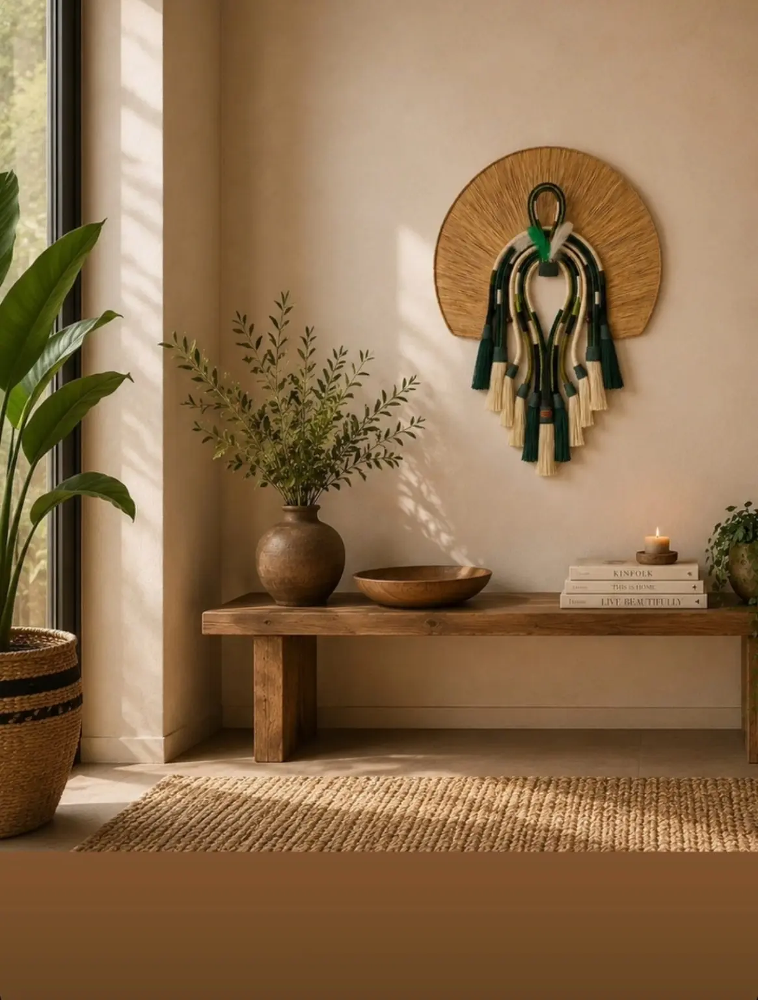
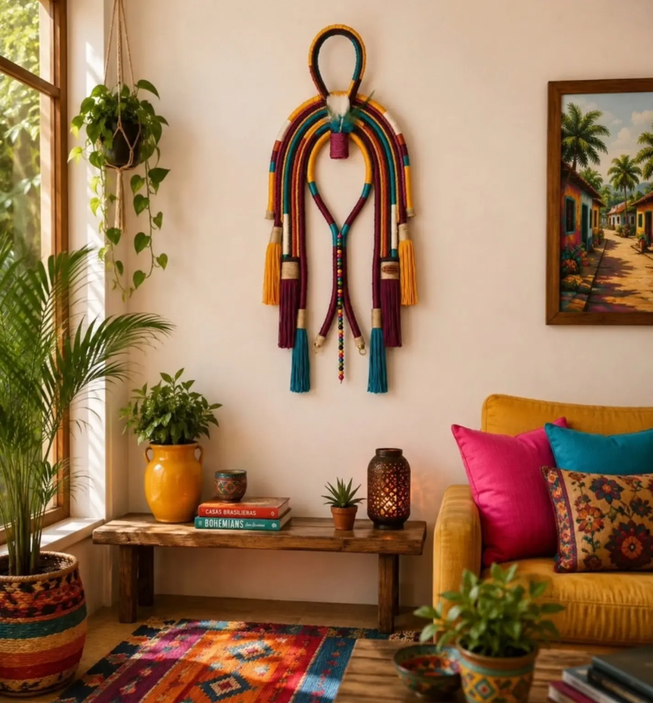
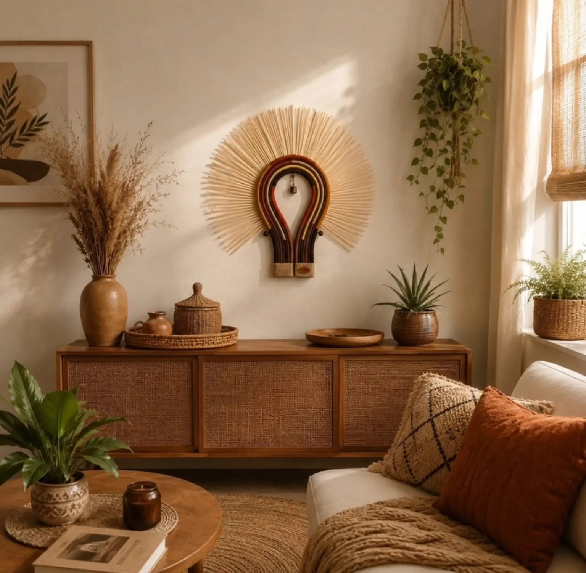
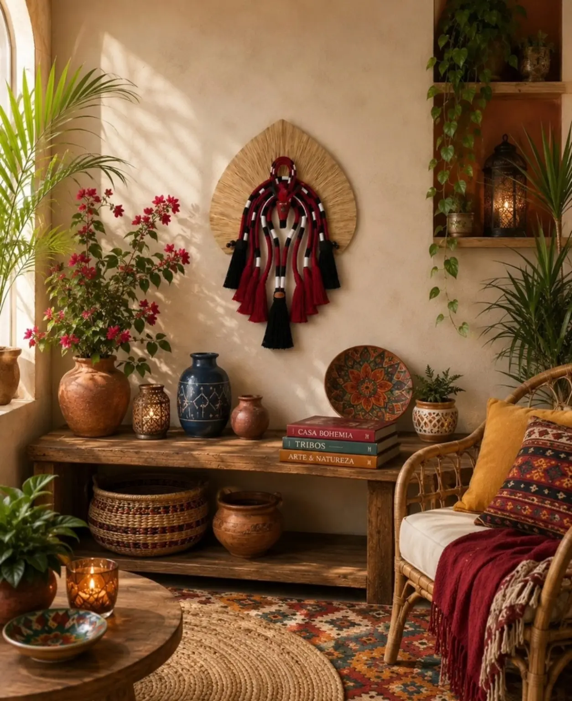
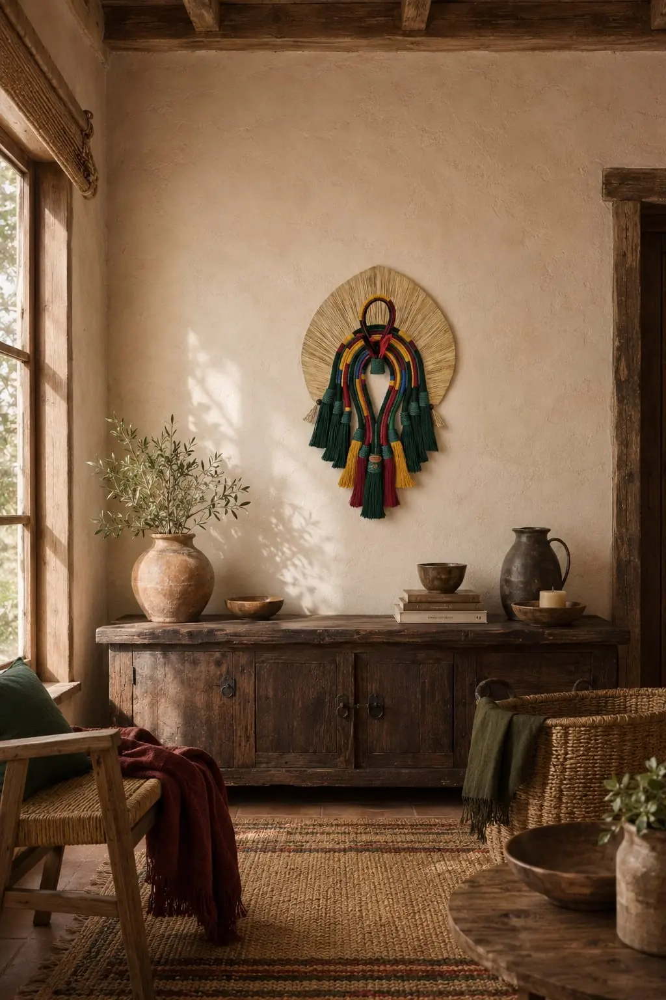

Cocar Vibrante
Peça autoral · feita à mão
Arte têxtil autoral · Bélgica
Peças feitas à mão para trazer textura, identidade e vida aos seus ambientes.

Entre fibras, cores e memórias, cada criação nasce para transformar paredes em lugares de presença.
Peças em destaque
Cada peça pode ser criada em combinações de cores e dimensões que conversem com o seu espaço.
Guia de tamanhos
As medidas servem como referência. Para uma composição personalizada, fale connosco sobre o seu espaço.

A alma por trás da forma
A Raiz & Forma cria cocares têxteis decorativos inspirados nas forças da natureza. Cada composição une fibras, cor e sensibilidade num trabalho paciente e inteiramente artesanal.
O resultado é uma peça com presença própria — feita para acompanhar pessoas, casas e histórias em qualquer lugar do mundo.
À frente da marca está uma empreendedora e artesã paulista, hoje radicada na Bélgica, que encontra na natureza a sua principal inspiração.
@raiz_eforma ↗Inspiração, arte e respeito
As peças da Raiz & Forma têm inspiração estética em formas, cores e elementos da natureza. São produzidas com cordas, fibras e materiais têxteis.
Estas criações decorativas não possuem vínculo com objetos sagrados, rituais ou representações autênticas de povos originários. A marca valoriza a originalidade do seu trabalho e o respeito à diversidade cultural.
Galeria de ambientes
Veja como diferentes formas e paletas transformam ambientes contemporâneos, naturais e acolhedores.





Uma peça só sua
Conte-nos sobre o ambiente, as cores e as dimensões desejadas. A partir daí, conversamos sobre possibilidades, prazo e envio.

Do nosso ateliê para o mundo
Atendimento por WhatsApp · Entregas internacionais mediante consulta de portes